To begin a customized game of chess, select the "New Game" option from the main menu screen as shown below:
Next, within the set-up screen, assign player types to the white pieces and to the black pieces using the drop-down menu to make your selection. You may choose human, or one of three A.I. players of specified levels of difficulty.
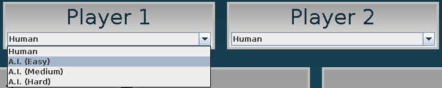
If two A.I. players are selected, the game play mode will consist of a presentation of a simulation of a chess game between the two A.I. players that you selected.
Next, select if you would like the game clock turned on or off. If you choose to turn it on, you may then select the maximum amount of time for your game.
The increment of the chess clock may then be turned off or turned on. If you choose to turn increment on, please select the amount using the slider bar.
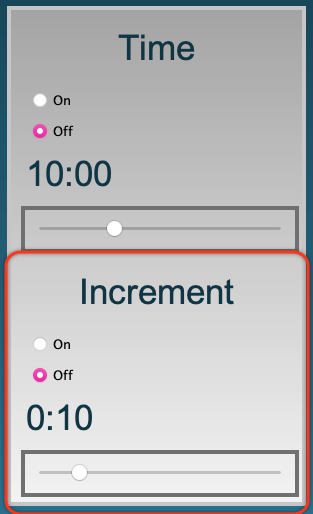
Choose which features you would like turned on or turned off during your game from the settings panel. Note: These features are only available to human players.

A checked box indicates that the corresponding feature will be turned ON. A blank checkbox indicates that the corresponding feature will be turned OFF.
Once you have chosen your preferred settings, click the "Start Game" button to begin.
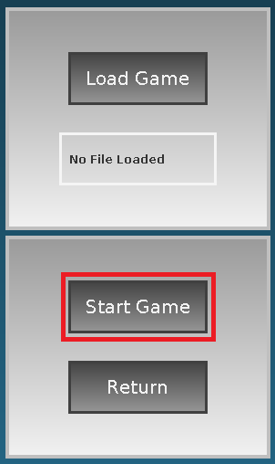
For novice users who wish to learn more about chess, a full tutorial mode is available. Simply select the "Tutorial" button from the main menu screen to begin the tutorial.
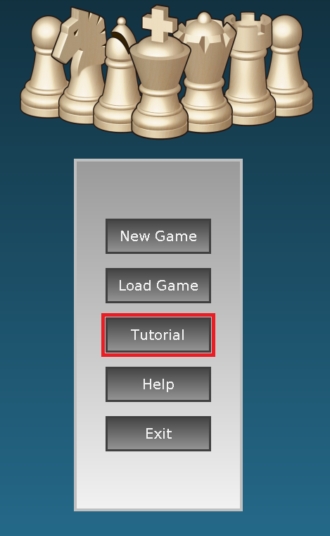
Tutorial mode will guide you through a game of chess using text notifications, move hints, a board highlighting feature and the ability to undo/redo moves.
To load a previously saved game of chess, you may select the load button from the main menu, the setup screen or from the menu bar during gameplay mode.
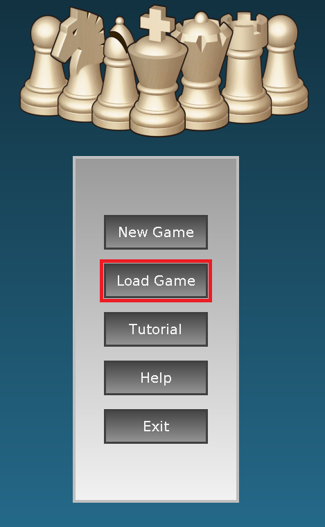
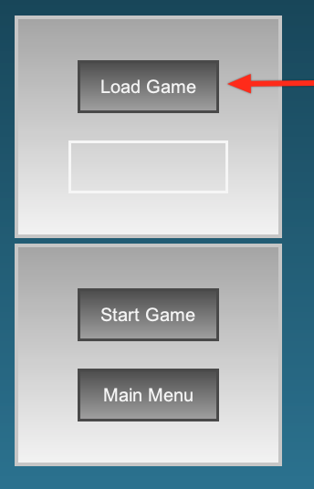
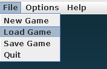
You will then be presented with a file chooser that will allow you to select the game file that you wish to open. Please note that the loaded game must be in PGN file format.
To save a game, you must be in gameplay mode. Select the "Save Game" option from the menu bar.
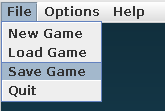
You will then be prompted to select where you would like to save the game on your PC. The game will be saved using PGN file format.
During gameplay mode if you wish to start a new game, simply select the "New Game" option from the menu bar to return to the main menu and proceed accordingly.
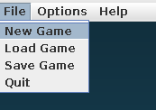
During gameplay mode, if you wish to restart your current game, please select the restart option from the menu bar.
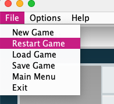
For detailed information about the rules of chess, please select the "Chess Rules" option from the "Help" section of the menu bar. For detailed information about each chess piece, please select the "Piece Information" option from the "Help" section of the menu bar. For application help, please select the "Application Help" option from the "Help" section of the menu bar. And for more information about The King's Gambit chess game, please select the "About" option from the "Help" section of the menu bar
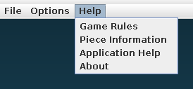
The board highlight feature presents a visual guide as to where a selected chess piece may move during human gameplay. Please see the following example using a bishop.
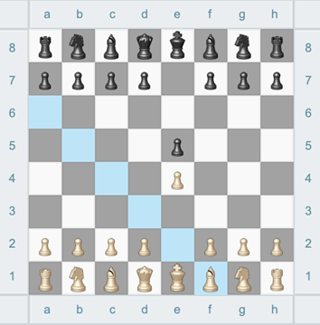
Move hints can be generated by pressing the "Hint" button located below the algebraic display. The board will illuminate green on the piece that is suggested to move, and the square that it is suggested this piece be moved to will also illuminate.
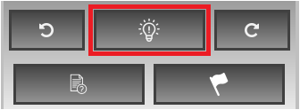
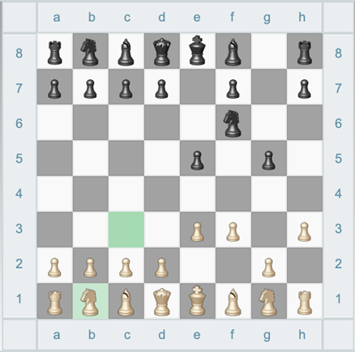
Notifications provide information regarding the state of the game during gameplay mode and can be viewed in the notifications pane below the graphical chess board. Notifications are indented to provide human players with information to help them learn about chess and to aid them in the successful completion of a game.
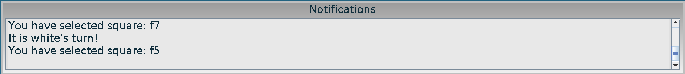
To view information about a specific chess piece, first select the piece you wish to learn about during human game play mode and then click the "About Piece" button located below the algebraic display. A window will open with information about how this piece may legally move during a chess match. The window can be left open for reference or closed at any time.
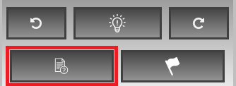
To undo or redo a move, select the undo or the redo button located below the algebraic display. Please note that during timed games, the undo/redo move feature will be automatically disabled.
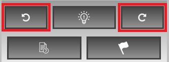
You may resign from a game at any time. To do so, please select the resign button indicated by the white flag. Please note that during timed games, if you resign, you will not be able to undo your last move and continue the game.
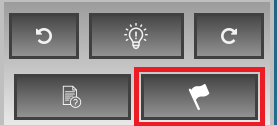
Features can be turned on or off before gameplay begins from the settings panel during game setup, please see the game setup section for more information. If you wish to turn a specific feature on or off during gameplay mode, this may be done by selecting the feature you wish to turn on or off from the menu bar.
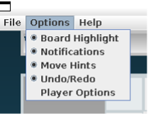